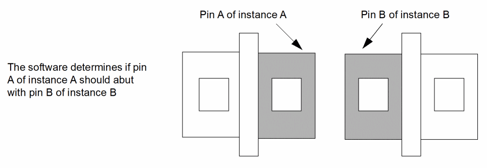
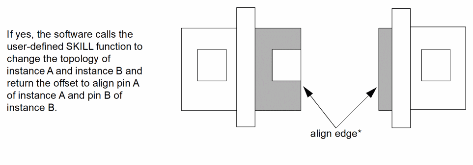
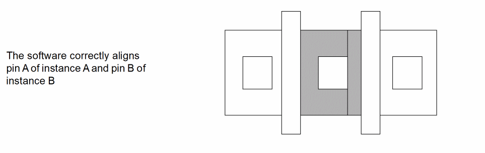
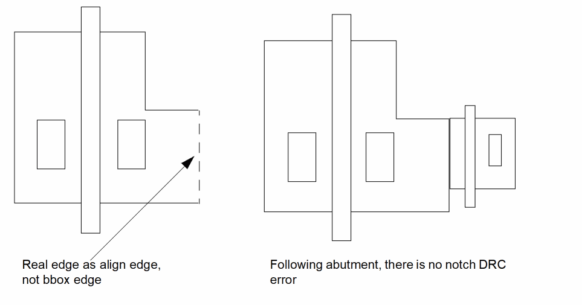

Automatic Abutment Flow
-
Layout XL recognizes that two Pcell instances can be abutted together, triggered either by overlapping two instance pins or when you create parameterized cell instances during chaining and folding.
 - Automatic abutment identifies cells for abutment by master name or class.
-
Auto-abutment calls
abutFunction, a user-defined SKILL function that performs the necessary changes to the parameterized cell instances themselves.
You must provide the SKILL function because Layout XL has no knowledge of the user-defined parameterized cell.
abutFunctionadjusts the parameters of Pcells and calculates reference edge offsets of conventional cells. It stores the old values, which can be called again if you choose to unabut the instances.
 -
If the cells can be abutted (the abutment connection condition is 1 or 2), the cells are abutted to the reference edges and the pins are aligned perpendicular to the direction of abutment.
The align edge is always the real outermost edge used, as shown in the figure below. This lets you maintain an L-shaped pin when applying abutment.
If the cells cannot be abutted, the abutment connection condition is 3 and the cells remain in their original configuration.
Return to top